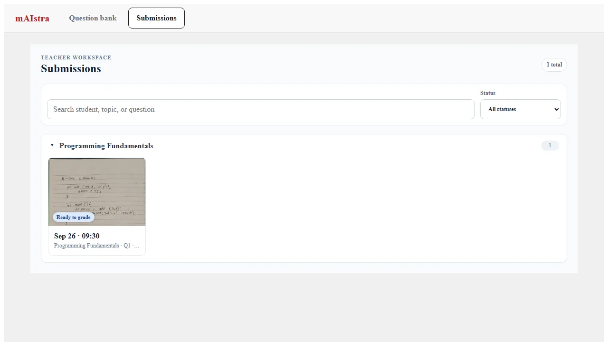

Project 01
mAIstra
A teaching workflow for reviewing programming submissions, executing code, and recording grades.

mAIstra
Project media capture pending
- Role
- Full-stack engineer for submission review and grading
- Platform
- Web application
- Stack
- Web application · Supabase · Judge0
- Technical challenge
- Connect an instructor-facing review flow to remote code execution while keeping submission and grading state coherent.
- Repository status
- team